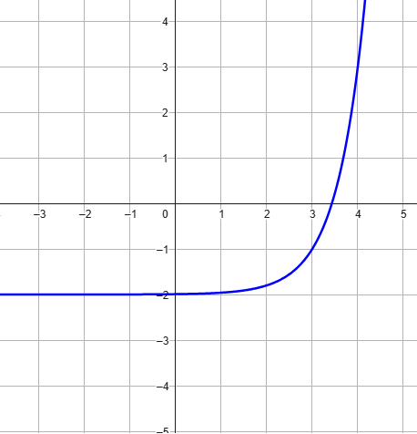

Esercizio 1
Risolvere la seguente equazione esponenziale
\[
\dfrac{2^{3x - 2} \cdot 16^x}{2^{-4x + 3}} = \dfrac{1}{\sqrt[5]{2}}
\]
Esercizio 2
Risolvere la seguente disequazione esponenziale
\[
\dfrac{1-2^{3x-1}}{1-2^{x+2}} = 1
\]
Esercizio 3
Stabilire la legge che definisce la funzione esponenziale \(f\) rappresentata nel seguente grafico

Scrivere successivemente la legge della funzione \(g\) il cui grafico è dato dalla contrazione orizzontale
di fattore \(3\) del grafico di \(f\).
Esercizio 4
Rappresentare il grafico delle seguenti funzioni. Spiegare
quale trasformazione lega ciascuna di esse alla funzione che la precede nella lista.
\[
\begin{align*}
\boldsymbol{\boxed{1}} \quad f(x) = 2^{x} \quad&\quad \boldsymbol{\boxed{2}} \quad g(x) = 2^{x - 3}
\\\\
\boldsymbol{\boxed{3}} \quad h(x) = 2^{2x - 3} \quad&\quad \boldsymbol{\boxed{4}} \quad p(x) = 3 \cdot 2^{2x - 3}
\end{align*}
\]